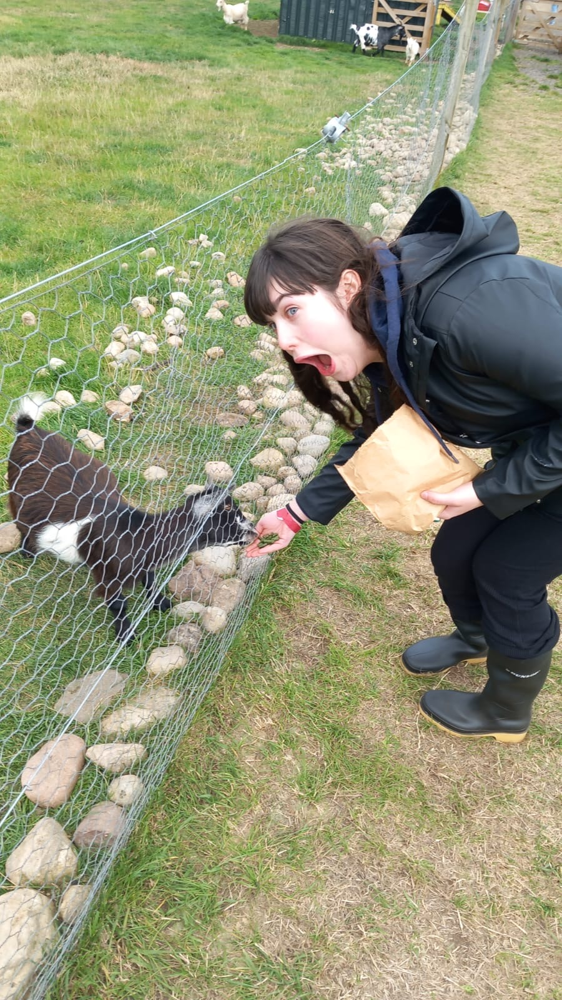

Spending time with family is important to me, creating memories with the people I love is a priority in life.
One of our traditions is to watch an episode of a TV series together every night. This started during COVID
to bring us closer together and find an escape from staying home all day, and it has been a part of our routine ever since.
I have 2 cats and a dog that spend most of their time looking for attention and trouble, keeping my hands full!
My main hobby is reading, there isn’t much that can beat getting lost in a book while cosy with a cat/ dog snuggled in.
My favourite genre is crime thrillers however I do like to dive into the classics occasionally. My plans are to join a
thriller book club through Waterstones to find people also into thrillers like me.
On a Saturday night, instead of going out, I prefer to stay in and have a games night with my boyfriend and brother.
Mario party and other video games often make an appearance, it gives us a chance to let out our competitive streak while
spending time together. These are the nights I treasure the most.
For as long as I can remember, my family and I have loved Aviemore. It's the place I feel most at home. Aviemore is a place for everyone, activities range from quad biking (which is AWESOME) to relaxing days at a spa. I wish that everyone could find their Aviemore, maybe Aviemore is your Aviemore.
While it has taken almost 20 years, fitness has become one of my interests. Mainly taking up running, pilates and yoga.
It gives me a healthy way to relieve stress and makes me feel fresher, even if I am exhausted by the end. My goal is to be able to complete a 5K in under 40 minutes!
I am an avid-musical theatre fan, I am working towards my grade 8 musical theatre style singing. It is ironic seeing as I have terrible stage freight!
Most of my time I spend studying. I love studying. I could easily spend a whole night with my head in the books. While I find exam time stressful, studying makes me feel stable and prepared.